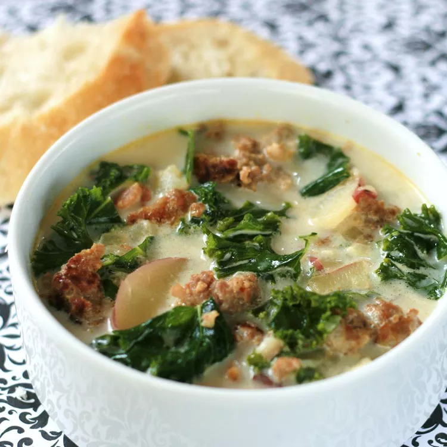

Super-Delicious Zuppa Toscana

Description
This zuppa toscana recipe is hearty, flavorful, and delicious — not to
mention identical to a popular menu item at a certain chain restaurant!
Ingredients
- 1 pound bulk mild Italian sausage
- 1 ¼ teaspoons crushed red pepper flakes
- 4 slices bacon, cut into 1/2 inch pieces
- 1 large onion, diced
- 1 tablespoon minced garlic
- 5 (13.75 ounce) cans chicken broth
- 6 medium potatoes, thinly sliced
- 1 cup heavy cream
- ¼ bunch fresh spinach, tough stems removed
Steps
- Cook the Italian sausage with the red pepper flakes.
-
Cook the bacon, then cook the onion and garlic in the bacon drippings.
-
Add the broth and bring to a boil, then add the potatoes and simmer.
-
Reduce the heat and stir in the cream, cooked sausage, and spinach.